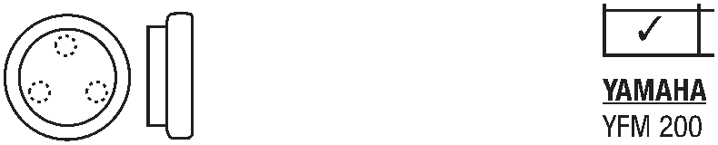

Specifications
General Specifications
Displacement225 cc
Model Years1983–1985
Service Data
Front Brake PadsEBC FA21 · SBS 576HF

FA2147 × 16.2 mmEBC shape badges show the actual pad diagram, code and published dimensions. Diagrams reproduced with written permission from EBC.
Frequently Asked Questions
What is the engine displacement of the Yamaha YTM 225 DXK, DXN Tri Moto?
The Yamaha YTM 225 DXK, DXN Tri Moto is listed with a 225 cc engine.
What brake pads does the YTM 225 DXK, DXN Tri Moto use?
Front: EBC FA21 · SBS 576HF. These are pad-shape references; confirm the compound and exact model year before ordering.
Specifications are manufacturer-claimed and can vary by model year and market. Confirm service limits and torque values against the owner's or workshop manual. Data updated 2026-11-22.